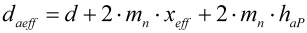

|
|
|


精密工程
KISSsoft 是计算精密工程齿轮的理想工具。
参考齿廓和几何形状按 DIN 54800 等定义计算。强度计算根据 ISO 6336、DIN 3990、VDI 2545 或 VDI 2736 执行，因为没有专门用于精密齿轮的强度计算。因此，在解释结果时，"定义齿轮计算所需安全系数"（参见"圆柱齿轮减速器所需安全系数"章）非常重要。
如果使用顶切刀具制造齿轮，则可以使用齿顶圆来测量齿厚。在这种情况下，关键是在参考齿廓中指定精确的齿顶高值，以匹配相关的刀具。这是因为该值用于计算齿顶圆。齿顶修形 k*mn 在计算加工后的齿顶圆时不予考虑。使用的公式如下：
 | (23.1) |
Precision engineering
KISSsoft is an ideal tool for calculating the gears for precision engineering.
The reference profile and the geometry are calculated as defined in DIN 54800 etc. The strength calculation is performed according to ISO 6336, DIN 3990, VDI 2545 or VDI 2736, since no special strength calculation is available for precision gears. For this reason, "defining required safeties for gear calculation" (see chapter Required safeties for cylindrical gear units) is important when you are interpreting the results.
If gears are manufactured using topping tools, the tip circle can be used to measure the tooth thickness. In this situation, it is critical that you specify precise value of the addendum in the reference profile to match the relevant cutter or tool. This is because this value is used to calculate the tip circle. The tip alteration k*mn is not taken into account in the calculation of the manufactured tip circle. The following formula is used:
(23.1) |